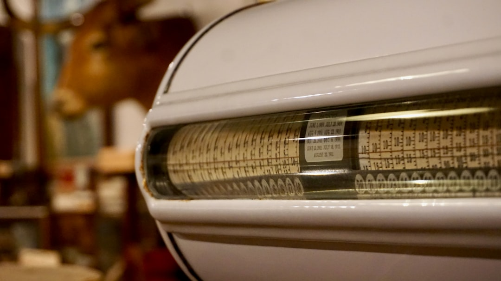

For most homeowners, the main price split is job type, not brand. The source page frames standard tank replacement at $600-$3,100, tankless installation at $1,400-$5,600, and professional heat pump installation at $3,200-$4,700. The practical next step is to describe fuel type, location, access and symptom first, then ask for the heater, labour, permit assumption, disposal, and any venting, gas or electrical work to be separated.
For Houston homeowners comparing water heater installation houston options, the useful starting point is not the heater alone but whether the job is a same type replacement, a tankless conversion, or a heat pump fit check. See Plumber for Water Heater Installation for the current service details.
Water Heater Installation Houston Explained
A useful starting point from Plumber for Water Heater Installation is to frame the job before comparing prices. Note whether the current unit is gas, electric, tankless or heat pump, where it sits, and what symptom started the replacement conversation. That keeps the first discussion about scope rather than a vague request for a cheap install.
The source page is strongest when it breaks the brief into the details that actually move a quote, state and ZIP, heater path, symptoms, timing, and access. If the heater is leaking, hard to reach, or in a tight closet or utility room, say that early. If you already know you want the same broad heater type in the same place, say that too.
- Current heater type and fuel
- Install location and access limits
- The symptom or reason for replacement
- Whether you want repair, replacement or conversion priced
How the price bands split by job type
For planning, the source page uses three broad 2026 installed ranges, $600-$3,100 for a standard tank replacement, $1,400-$5,600 for tankless installation, and $3,200-$4,700 for professional heat pump installation. Those figures are useful only after you are clear about which path you are pricing.
The key split is simple. A same type tank replacement is not the same job as moving to tankless, and neither is the same as checking whether a heat pump suits the home. The page notes that tankless work can include venting, gas or electrical changes, which is why the band is different. Heat pump jobs sit in a separate range again and need a fit check rather than a straight price comparison.
Use the numbers as a first pass, then ask for the quote to separate heater, labour, disposal, permit assumption and any service changes.
Permits and inspection are local checks
The page treats permits as a local check, not a national assumption. Its example is Oregon guidance showing that water heater replacement can be permit required plumbing work, but the practical point is broader, the city or county answer controls, and the inspection question should be asked before install day.
For a Houston job, ask who confirms the local rule, who books inspection if one is needed, and whether the quote already assumes code related adjustments. A national planning band can help you compare options, but it is not final until the permit and inspection path is clear.
- Is this quote based on a permit being required or not required?
- Who handles inspection scheduling if one applies?
- Are disposal and any code triggered extras itemised or bundled?
Replacement, repair and conversion are different conversations
One reason the source page works as a screening guide is that it separates replacement, tankless installation, heat pump fit and the cases where you are not yet sure whether repair or replacement is the real decision. That matters because symptoms and access can change the conversation before brand or model ever does.
If the existing unit and the proposed unit keep the same broad type, fuel and location, compare it first as a standard replacement. If the project changes heater type or building services, compare it as a conversion and expect more questions. If you are still narrowing the job, a broader water heater installation guide can help you sort the path before you collect local quotes.
The safest request is the one printed on the source page, ask for the heater, labour, permit assumption, disposal, and any venting, gas, electrical or access work to be separated.
Who this applies to, and what to ask next
This guide is most useful for homeowners who already know a replacement conversation has started, but do not yet know whether they are pricing a straightforward tank job or a more involved change. It also suits anyone comparing a heat pump recommendation where the value depends on fit, not on a loose promise about incentives.
The source page adds one caution that is easy to miss. It says not to assume a 2026 federal heat pump credit, because the IRS material reviewed for the guide documented the credit through 31 December 2025. If a rebate or credit is central to the payback, ask for current proof before it affects the decision.
- Current heater type and age, if known
- Exact location, such as garage, basement, closet or utility room
- Whether the issue is urgent, leaking or access related
- Whether you want same type pricing or a conversion quote
- Identify the current setup. State whether the existing heater is gas, electric, tankless or heat pump, and add the location and age if known.
- Class the job correctly. Decide whether you are pricing a same type replacement, a repair question or a conversion before you compare quotes.
- Ask the permit question early. Confirm who checks the local rule and who schedules inspection before install day.
- Request separated pricing. Ask for the heater, labour, disposal, permit assumption and any venting, gas, electrical or access work as distinct items.
| Path | What changes the scope | Best question to ask |
|---|---|---|
| Standard tank replacement | Same broad heater path, same fuel and location | Can you separate the heater, labour, disposal and permit assumption? |
| Tankless installation | May include venting, gas or electrical changes | What extra trade or code work is included in this price? |
| Heat pump installation | Needs a fit check and current incentive check | What confirms suitability before I compare payback? |
Common questions
Should I get the permit answer before accepting a quote? Yes. The source page says permit answers are local, and its Oregon example is there to show that replacement can be permit required plumbing work. For Houston, confirm who checks the rule and who books inspection before you treat any planning range as final.
Is tankless automatically the better option? No. The source page treats tankless as a different job, with a higher broad planning band and possible venting, gas or electrical changes. Compare it as a conversion question, not as a simple swap.
Can I assume a 2026 heat pump credit? No. The source page says the IRS material reviewed for the guide documented the federal credit through 31 December 2025, so any 2026 claim needs current proof before it changes the numbers.
What details should go into the first enquiry? Keep it practical, state and ZIP, current heater type, install location, symptom, timing and whether you want repair, replacement or conversion priced.
This guide covers how to frame a Houston water heater job, compare the main installation paths and ask better quote questions.